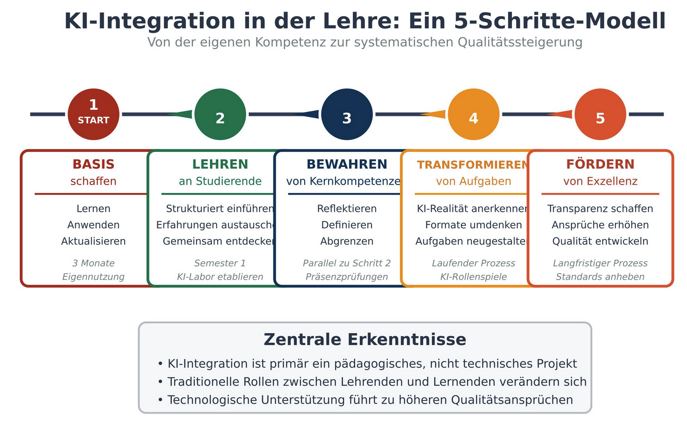
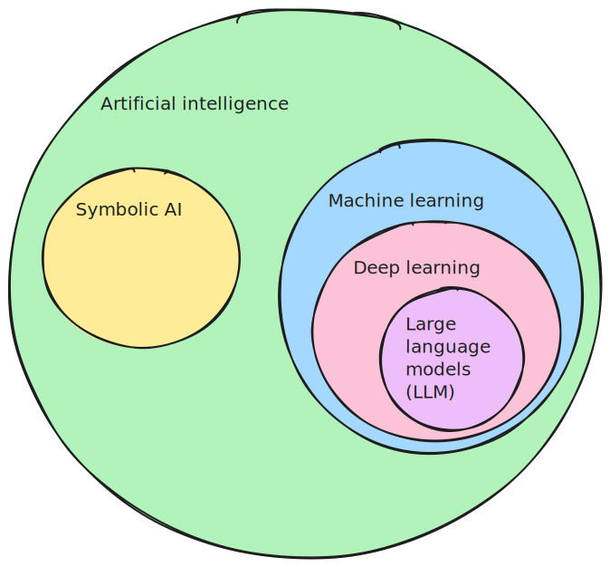
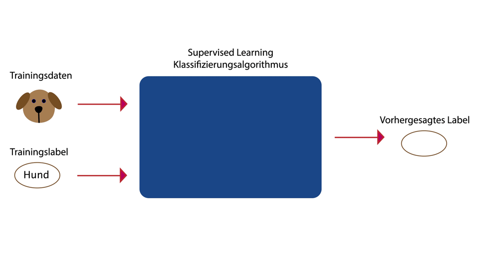
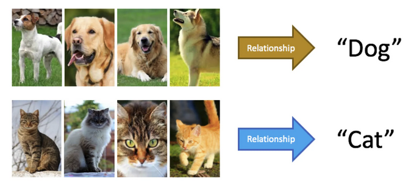
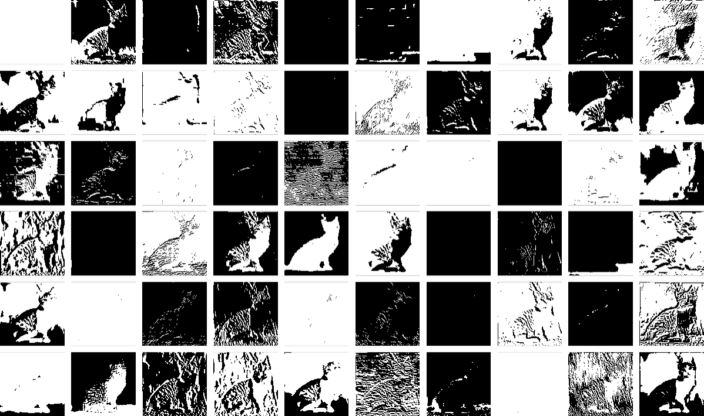

Was ist Künstliche Intelligenz?
Erster Schritt: Eigene KI-Kompetenz entwickeln
Warum du beginnen solltest

Grafik von Barbara Geyer
Erster Schritt: Eigene KI-Kompetenz entwickeln
Warum du beginnen solltest
Grafik von Barbara Geyer
Was is KI?

Symbolische KI / Maschinelles Lernen
Symbolische KI:
- Explizite Regeln und Logik, programmiert von Menschen
- Basiert auf Wenn-Dann-Anweisungen und vordefiniertem Wissen
- Folgt klaren, erklärbaren Schritten
- Gut für Probleme mit eindeutigen Regeln
- Weniger anpassungsfähig an neue Situationen
- Kann schlecht mit Unsicherheit umgehen
Machine Learning:
- Lernt automatisch statistische Muster und Beziehungen aus Daten
- Funktioniert wie eine “Black Box” - Entscheidungen schwerer zu erklären
- Kann sich durch Training an neue Situationen anpassen
- Gut für komplexe Muster und unklare Regeln
Machine learning

Machine learning
- Supervised learning
- Unsupervised learning
- Reinforcement learning
Machine learning
- Supervised learning
- Unsupervised learning
- Reinforcement learning

Machine learning
- Supervised learning
- Unsupervised learning
- Reinforcement learning


Klassifizierung

Figure courtesy of Branav Kumar Gnanamoorthy
Mit Symbolischer KI
IF has_whiskers = true
AND has_pointed_ears = true
AND has_fur = true
AND has_tail = true
THEN is_cat = trueMit Machine learning
- System lernt automatisch Muster (Formen, Farben, Texturen) aus tausenden Bildern.
- Kann Katzen in neuen Bildern erkennen, auch in ungewöhnlichen Positionen oder Beleuchtungen.
- Braucht keine expliziten Regeln.

Was kann KI?

Was kann KI?
AlphaFold ist ein von Google DeepMind entwickeltes KI-System, das die 3D-Struktur eines Proteins aus seiner Aminosäuresequenz vorhersagt.

Quelle: AlphaFold
Was kann KI?